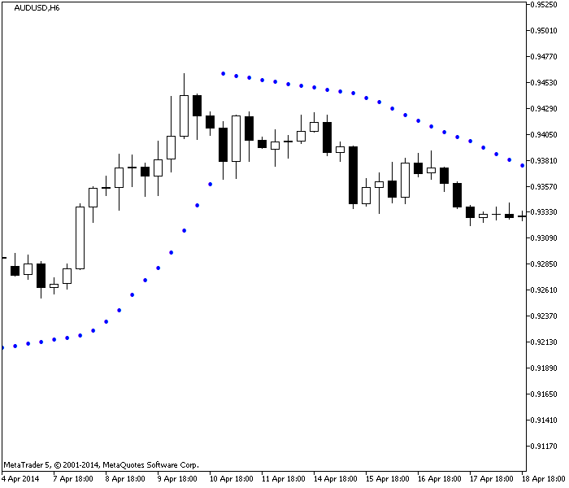
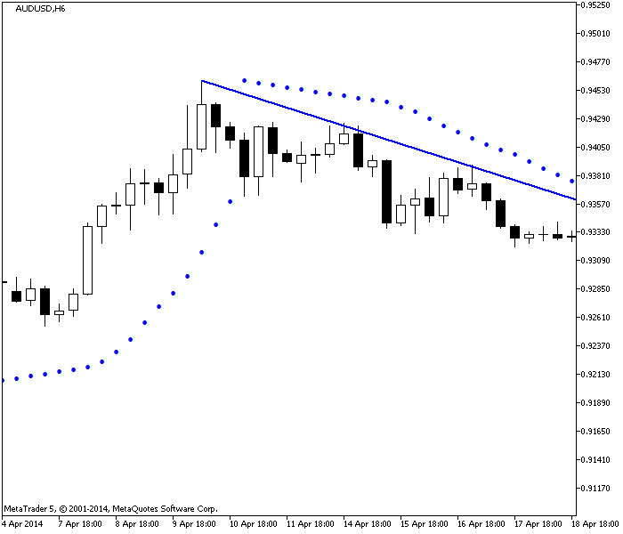
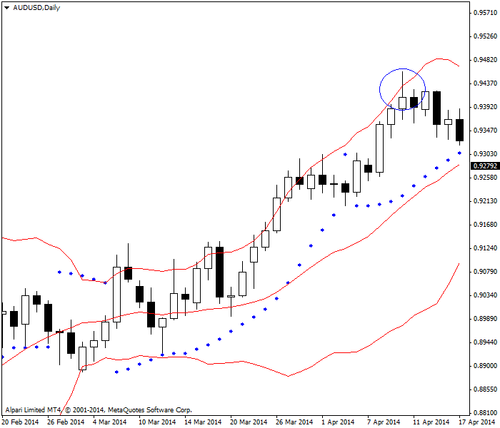
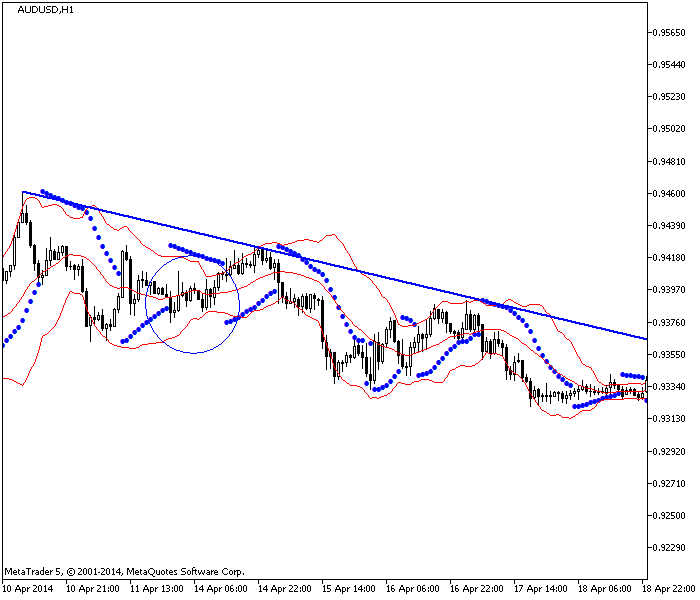

<!DOCTYPE html>
<html>
</html>
<head>
  <meta charset="utf-8">
  <meta http-equiv="X-UA-Compatible" content="IE=edge">
  <title>外汇站（fx-z.com） - 抛物线转向指标（Parabolic SAR）</title>
  <meta name="description" content="">
  <meta name="viewport" content="width=device-width, initial-scale=1">
  <meta name="robots" content="all,follow">
  <!-- Bootstrap CSS-->
  <link rel="stylesheet" href="vendor/bootstrap/css/bootstrap.min.css">
  <!-- Font Awesome CSS-->
  <link rel="stylesheet" href="vendor/font-awesome/css/font-awesome.min.css">
  <!-- Google fonts - Roboto-->
  <link rel="stylesheet" href="https://fonts.googleapis.com/css?family=Roboto:400,300,700,400italic">
  <!-- owl carousel-->
  <link rel="stylesheet" href="vendor/owl.carousel/assets/owl.carousel.css">
  <link rel="stylesheet" href="vendor/owl.carousel/assets/owl.theme.default.css">
  <!-- theme stylesheet-->
  <link rel="stylesheet" href="css/style.default.css" id="theme-stylesheet">
  <!-- Custom stylesheet - for your changes-->
  <link rel="stylesheet" href="css/custom.css">
  <!-- Favicon-->
  <link rel="shortcut icon" href="img/favicon.png">
  <!-- Tweaks for older IEs--><!--[if lt IE 9]>
    <script src="https://oss.maxcdn.com/html5shiv/3.7.3/html5shiv.min.js"></script>
    <script src="https://oss.maxcdn.com/respond/1.4.2/respond.min.js"></script><![endif]-->
</head>
<body>
  <div id="all">
    <div class="container-fluid">
      <div class="row row-offcanvas row-offcanvas-left"> 
        <!--   *** SIDEBAR ***-->
        <div id="sidebar" class="col-md-4 col-lg-3 sidebar-offcanvas">
          <div class="sidebar-content">
            <h1 class="sidebar-heading"> <a href="https://fx-z.com">fx-z.com</a></h1>
            <p class="sidebar-p">介绍外汇相关的基本知识，告诉您如何进行自己的技术面和基本面分析，讲解先进的交易理念，并且为您阐述失败交易者与专业交易者之间的真正区别。 </p>
            <p class="sidebar-p">通过这些课程的学习，您将学会如何根据自己的优势来应用情绪分析，还将了解真实世界的事件会对货币汇率产生什么影响，央行在外汇市场中所发挥的作用，以及交易者在颇受欢迎的即期外汇交易中有哪些选择方案。 </p>
            <ul class="sidebar-menu">
                <!-- Link-->
                <li class="sidebar-item"><a href="https://fx-z.com" class="sidebar-link">首页</a></li>
                <!-- Link-->
                <li class="sidebar-item"><a href="cihui.html" class="sidebar-link">外汇词汇</a></li>
                <!-- Link-->
                <li class="sidebar-item"><a href="ebook.html" class="sidebar-link">获取外汇电子书</a></li>
            </ul>
            <p class="social"><a href="https://www.forextimechina.com.cn/zh?form=IZIN" target="_blank"data-animate-hover="pulse" class="external facebook"><i class="fa fa-eur"></i></a><a href="https://www.forextimechina.com.cn/zh?form=IZIN" target="_blank" data-animate-hover="pulse" class="external gplus"><i class="fa fa-gbp"></i></a><a href="https://www.forextimechina.com.cn/zh?form=IZIN" target="_blank" data-animate-hover="pulse" class="external twitter"><i class="fa fa-rmb"></i></a><a href="https://www.forextimechina.com.cn/zh?form=IZIN" target="_blank" title="" class="external instagram"><i class="fa fa-dollar"></i></a><a href="https://www.forextimechina.com.cn/zh?form=IZIN" target="_blank" data-animate-hover="pulse" class="email"><i class="fa fa-money"></i></a></p>
            <div class="copyright text-center text-md-left">
             
              
            </div>
          </div>
        </div>
        <!--   *** SIDEBAR END ***  -->
        <!--   *** DETAIL ***-->
        <div class="col-md-8 col-lg-9 content-column white-background">
          <div class="small-navbar d-flex d-md-none">
            <button type="button" data-toggle="offcanvas" class="btn btn-outline-primary"> <i class="fa fa-align-left mr-2"></i>菜单</button>
            <h1 class="small-navbar-heading"> <a href="https://fx-z.com/8-7.html">下一篇 </a></h1>
          </div>
          <div class="row">
            <div class="col-xl-10">
              <div class="content-column-content">
                <h1>抛物线转向指标（Parabolic SAR）</h1>
       <p>
    SAR 是一个不言自明的词汇，代表“停止并转向”。当价格触及指标设定的特定价格水平时，则您的交易决策已经创建好——您不仅应当在指定价位退出当前头寸，还应在相同价位的相反方向建立新头寸。
</p>
<p>
    这正是抛物线转向指标唯一简单的一面；这项指标由 Welles Wilder 于 20 世纪 70 年代末发明（一并发明的还有许多其他核心指标）。首先，“抛物线”这个名称只是一项描述。指标的计算过程并不涉及任何抛物线计算。指标只是在图表上呈现出抛物线的形状。
</p>
<p>
    抛物线转向指标是一项将趋势方向与趋势强度（例如动量）相结合，并在达到特定标准时采用追踪止损的混合指标。计算抛物线转向指标时，您首先需要确定最高点（走势最高点）；这种最高点被称为极点价（EP）。您在它的基础上加上从 0.02 起步的加速因子（AF），然后每当触及下一个更高点时，再加 0.02。无论您有多少加速区间，AF 最高为 0.20。指标的计算方法是，用极点价与前一时段 SAR 之间的差值乘以加速因子，然后再加上前一时段的 SAR。
</p>
<p>
    在上涨趋势中，抛物线转向指标沿着价格曲线下方移动，并随着新价格曲线上涨。指标如图所示。由于抛物线转向指标只是单个数字，因此它的显示方式是点状。本图中，蓝点即为抛物线转向指标的值。请注意，抛物线转向指标触发于最高点之后的第三个时段，说明新低点是逆转走向的起点。现在，我们应该考虑将会以相反方向（下行）运动的加速因子。此时，抛物线转向指标点位于价格水平之上，说明如果价格到达该点，则下行走势结束，您应该停止并转向回多头。
</p>
<p>
     新低点触发逆转。
</p>
<p>
    每个软件包和图表系统将抛物线转向指标作为标准功能，因此您并非真的需要知道如何计算该指标。您只需知道标准加速因子是 0.02，而且大多数情况下，您无法修改它，除非图表系统允许您将加速因子——即“步长因子”指定为其他值。在外汇中，如果您将加速因子降低至 0.01，您将获得范围更小的止损位，但同时将遭遇更多双重损失。研究表明，外汇中将 0.02 作为常规参数比较合适。
</p>
<p>
    抛物线转向指标具有几个优点；第一个优点是它在今日收盘价（或您使用的任何时段的收盘价）提供止损点。由于您不知道下一个开盘价，在新时段开盘之前轻松获得止损点是非常便利的。您可以将抛物线转向指标作为自己的止损点，直到您获得更多基于新数据的信息。
</p>
<p>
    抛物线转向指标的另一项有用功能是，它可以向您提示趋势的短暂性。虽然抛物线转向指标是一项滞后指标，但它的前瞻能力使它不容忍回撤，而且将在您认为走势仍在进行时产生逆转。走势可能会延续，但抛物线转向指标有一项哲学假设：只有继续高于最新抛物线转向指标的走势才值得您花费时间和资金。
</p>
<p>
    此外，抛物线转向指标还有一个有趣的特征，即当您手动绘制支撑线和阻力线时，它们通常与抛物线转向指标的点对齐。
</p>
<p>
     抛物线转向指标与手绘阻力线
</p>
<p>
    当然，问题在于，抛物线转向指标最适合用于趋势市场，并将在区间盘整或高波动（动荡市）行情中产生大量双重损失。而且，什么是“区间盘整交易”取决于您想要哪种时间周期。在日线图上表现稳定、整齐的价格曲线用在 15 分钟或 60 分钟图表上可能非常糟糕。
</p>
<p>
    可惜的是，如果您在多个时间周期上查看价格，您将获得差异非常大的抛物线转向指标点。上述两个图表的价格位于同一个 360 分钟图表上。现在我们来看看日线图上的相同价格。在该时间周期中，抛物线转向指标尚未放弃走势，并将让您继续看多——尽管您需要注意，上一条曲线的最低点已经非常接近上一个转向点。日线图上还绘制了布林线。我们在布林线课程中已经了解到，外汇中的布林线突破之后通常——极为频繁地——跟随着回撤。因此，您现在有一个未解之谜。在 360 分钟图表上，抛物线转向指标让您停止并转向。在日线图上，它让您坚持多头头寸，而且，让您有理由考虑回撤因素——高于 B 线顶部的高点告诉您，多头已经过于强势、迅速，并可能有所回撤。
</p>
<p>
     抛物线转向指标，价格越过布林线顶部（圆圈处）
</p>
<p>
    当然，遵循哪个抛物线转向指标取决于您，但本例中的正确选择是 360 分钟版本。请查看以下图表——60 分钟图表上的相同价格系列。货币确实继续形成了一系列走低的高点及低点（或下行趋势）。从日线图来看，我们仍不知道回撤幅度，但该回撤显然从最高点开始。不过，虽然每小时图表验证了 360 分钟抛物线转向指标的正确性，但它提供了一系列全新的抛物线转向指标点，而且其中至少有一部分点是绝对错误的。
</p>
<p>
     抛物线转向指标犯错。
</p>
<p>
    Wilder 试图发明一个一体化交易系统，用一个指标即可产生入场和离场信号。您可以将抛物线转向指标作为独立的交易系统，但它更适合用于更长期的时间周期——至少是每日周期——而且，将它与其他指标结合使用的效果更佳。
</p>
<p>
    抛物线转向指标在每个时间周期上均表现出色，只产生少量双重损失，但是在更长期的时间周期上（例如 360 分钟图表和每日图表上）的双重损失更小。不过鉴于其计算方式，它在多重时间周期上一直表现不佳。在多重时间周期上对比多个抛物线转向指标总是容易混淆。在时间周期上使用抛物线转向指标的诀窍是，让它与您的交易窗口上方保持一段距离。如果您交易的时间周期为 240 分钟，请使用 360 分钟抛物线转向指标。这有助于您避免普通回撤中的双重损失。
</p>
<p>
    <br/>
</p>
<p>
    <br/>
</p>
              </div>
            </div>
          </div>
        </div>
      </div>
    </div>
  </div>
  <!-- JavaScript files-->
  <script src="vendor/jquery/jquery.min.js"></script>
  <script src="vendor/popper.js/umd/popper.min.js"> </script>
  <script src="vendor/bootstrap/js/bootstrap.min.js"></script>
  <script src="vendor/jquery.cookie/jquery.cookie.js"> </script>
  <script src="vendor/owl.carousel/owl.carousel.min.js"></script>
  <script src="vendor/masonry-layout/masonry.pkgd.min.js"></script>
  <script src="js/front.js"></script>
</body>